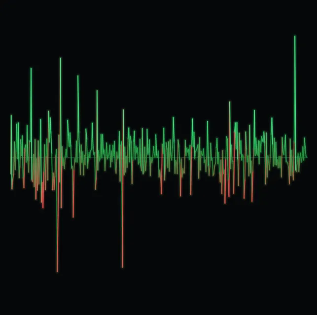
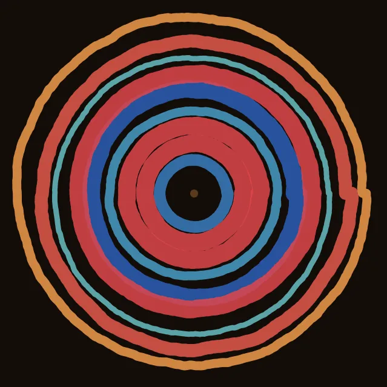
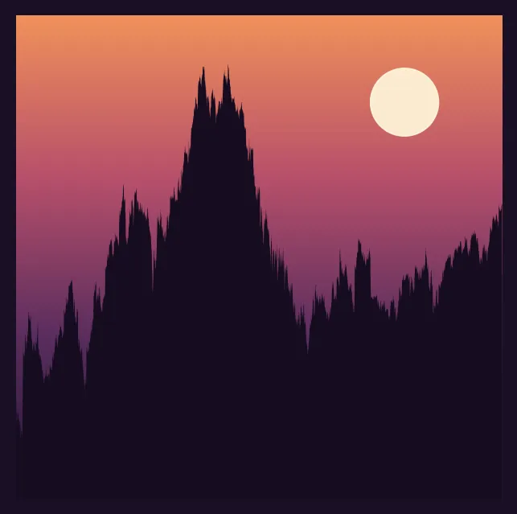
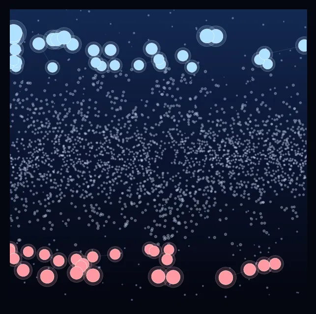
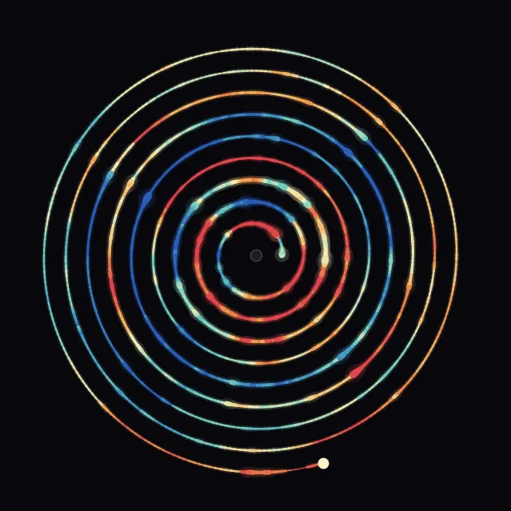
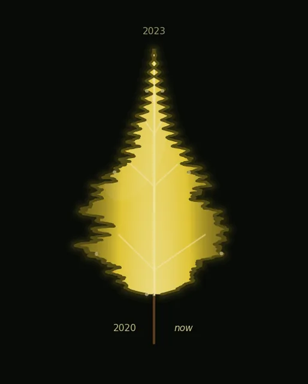

ROKU · price as art
ROKU: feral temperament, a faded star, twice left for dead. 5.0y of life · -66% total · -19%/yr · 67% vol · worst fall -92%.

Seasonal bloom — each year a petal-loop, growing outward as it climbs.

Heartbeat — daily moves as vital signs; flatline calm vs racing pulse.

Growth rings — one ring per year, thick when the year was big.

Dusk mountains — the life arc as terrain; crashes carve the valleys.

Constellation — the most dramatic days of its life as stars.

Record of time — grooves wind outward, weighted by volume, hued by momentum.

Leaf — the price walks the margin (oldest at base-left → midpoint at tip → now at base-right); lobes & notches are that side's highs & lows. Color = health (green thriving → red dying); fast growth grows it thin & toothed, slow growth broad & waxy.